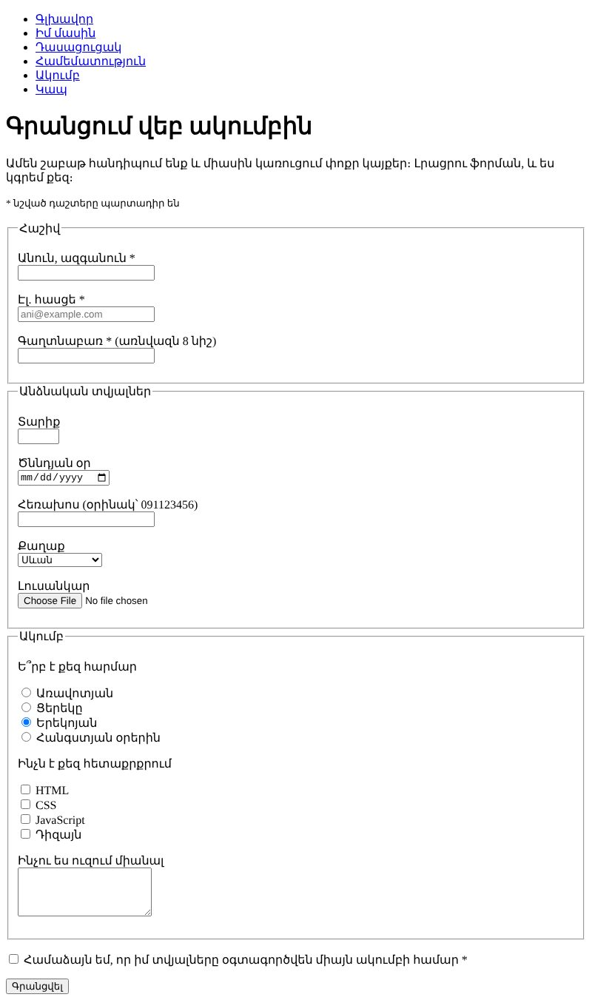

Տնային աշխատանք · HTML Դաս 04 · մինի-նախագիծ
Կայքում ավելանում է ակումբի գրանցման էջը՝ ամբողջական ֆորմա label-ներով, տարբեր տեսակի դաշտերով, խմբերով և վալիդացիայով։
Օգտագործիր միայն Դաս 01–04-ի թեգերը։ Ֆորման կունենա բրաուզերի լռելյայն տեսքը․ դաշտերի ոճավորումը CSS է (Դաս 06-ից), իսկ ուղարկելուց առաջ ստուգումը JavaScript-ով՝ JS բլոկում։
Գրանցման ֆորմա՝ երեք խմբով։ Ամեն դաշտ ունի label, պարտադիր դաշտերը չեն թողնում ուղարկել դատարկ ֆորման, և ամբողջ ֆորման անցնելի է միայն ստեղնաշարով։

Սկսիր Դաս 03-ի քո կայքից։ Եթե այն չունես, վերցրու Դաս 03-ի օրինակը։
Ստեղծիր pages/register.html և ավելացրու «Ակումբ» կետը նավիգացիայում բոլոր էջերում։ Ֆորման՝ action="register.html" և method="get", որ ուղարկելուց հետո տվյալները տեսնես հասցեում։
Ամեն դաշտ՝ label for + input id։ for-ը և id-ն նույնն են, իսկ name-ը այն անունն է, որով դաշտը կգնա սերվեր։
<p>
<label for="email">Էլ. հասցե *</label><br>
<input type="email" id="email" name="email" autocomplete="email" required>
</p>Սեղմիր label-ի տեքստին։ Ֆոկուսը պետք է գնա դաշտին։ Եթե չի գնում, for-ը և id-ն չեն համընկնում։
Երեք fieldset՝ ամեն մեկը իր legend-ով․ «Հաշիվ», «Անձնական տվյալներ», «Ակումբ»։ Համաձայնության checkbox-ը և կոճակը՝ խմբերից դուրս։
text, email, password, number, date, tel, file։ Բացիր էջը հեռախոսում (Live Server-ը ցույց է տալիս հասցեն ցանցում) և նայիր, թե ինչպես է ստեղնաշարը փոխվում ամեն դաշտի համար։
<select id="city" name="city">
<optgroup label="Երևան">
<option value="kentron">Կենտրոն</option>
<option value="arabkir">Արաբկիր</option>
</optgroup>
<optgroup label="Մարզեր">
<option value="sevan" selected>Սևան</option>
<option value="gyumri">Գյումրի</option>
</optgroup>
</select>name="time"-ով։ Ընտրվում է միայն մեկըname="interest", ամեն մեկը իր value-ով։ Ընտրվում են մի քանիսը<label><input type="radio"> Երեկոյան</label>։ Սա label-ի երկրորդ ձևն էrequired՝ անուն, էլ. հասցե, գաղտնաբառ, համաձայնությունminlength՝ անուն (2) և գաղտնաբառ (8)min/max՝ տարիք, pattern՝ հեռախոս?name=...&email=...Հասցեում գաղտնաբառը երևում է բաց տեքստով։ Սա է պատճառը, որ իրական կայքերում գաղտնաբառով ֆորմաները ուղարկվում են method="post"-ով։ Իսկ ֆայլը get-ով չի ուղարկվում, միայն նրա անունը։
Ձեռքդ վերցրու մկնիկից։ Tab-ով անցիր բոլոր դաշտերը, radio-ների միջև՝ սլաքներով, checkbox-ը նշիր Space-ով, ուղարկիր Enter-ով։
label (երկու ձևն էլ օգտագործված է)nametypeselect՝ optgroup-ով, և textareaname-ովfieldset՝ legend-ովrequired, minlength, min/max, pattern՝ փորձարկված| Սխալ | Ինչպես ուղղել |
|---|---|
| Label-ին սեղմելիս ոչինչ չի լինում | for-ը և id-ն տարբեր են կամ id-ն կրկնվում է էջում |
| Կարելի է ընտրել երկու radio միաժամանակ | Նրանք ունեն տարբեր name |
| Դաշտը չկա հասցեում ուղարկելուց հետո | Դաշտը չունի name |
| textarea-ում հայտնվել են բացատներ | <textarea> և </textarea> թեգերի միջև կա տողադարձ կամ բացատ |
Սրանք Դաս 04-ի տնային աշխատանքի կետերն են։ «մինի-նախագծում» նշվածները արդեն կատարել ես վերևի քայլերում, մնացածը կատարիր առանձին ֆայլերում կամ նույն թղթապանակում։
label՝ for/id ձևով։ մինի-նախագծումlabel-ի ներսում։ Համեմատիր։ մինի-նախագծումname-ը։ Բացատրիր մեկնաբանության մեջ՝ ինչ կփոխվի ուղարկելիս։type։ Բացիր հեռախոսում և նկարագրիր՝ ինչպես է փոխվում ստեղնաշարը։ մինի-նախագծումname-ը և գրիր՝ ինչ եղավ։ մինի-նախագծումselect՝ optgroup-ով։ մինի-նախագծումtextarea։ Փորձիր տողադարձով գրել բացվող և փակվող թեգերի միջև՝ ի՞նչ եղավ։ մինի-նախագծումrequired, minlength, min/max, pattern։ Փորձարկիր բոլորը։ մինի-նախագծումfieldset-ներով՝ առնվազն երկու խումբ legend-ներով։ մինի-նախագծումselect), սեռ (radio), հետաքրքրություններ (checkbox), ծննդյան օր (date), նկար (file), համաձայնություն։ Ստուգիր ամբողջը Tab-ով։ մինի-նախագծումԵրբ բաժին 03-ի բոլոր կետերը նշված են, բացիր օրինակը և քո էջը կողք կողքի։ Բացիր երկուսի կոդն էլ խմբագրիչում։ Գտիր մեկ բան, որ դու արել ես այլ կերպ, և մտածիր՝ որն է ավելի հասկանալի և ինչու։ Քո լուծումը կարող է տարբերվել և լինել ճիշտ։